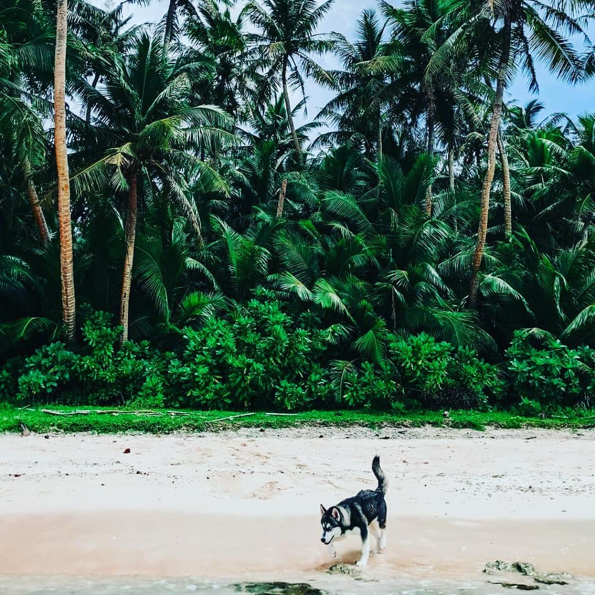
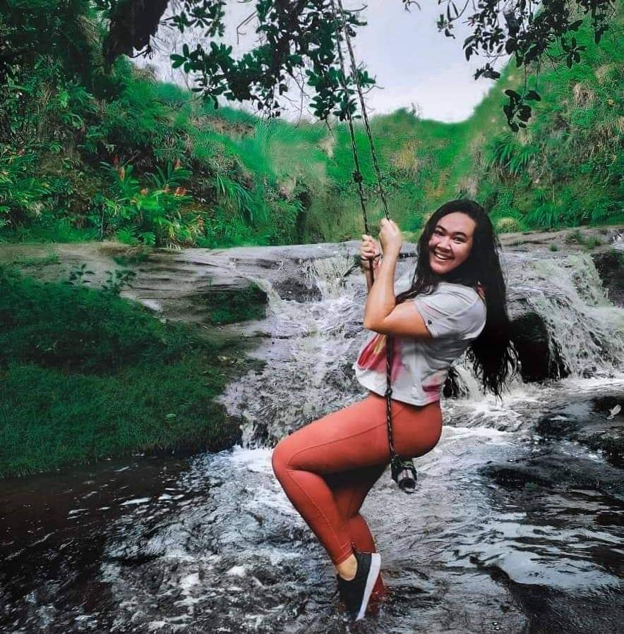

I made a list of all the travel destinations visited on a trip with my wife this spring!
For breathtaking panoramic views, make your way to Two Lovers Point,
a romantic cliffside lookout offering sweeping vistas of the Pacific Ocean.
Legend has it that two star-crossed lovers leaped from this point,
making it a symbol of eternal love and devotion. Capture unforgettable memories
as you take in the mesmerizing sunset and marvel at Guam's natural splendor.
Continue your island adventure at Hila'an Beach,
a hidden gem known for its secluded shores and tranquil atmosphere.
Dive into turquoise waters, explore hidden coves, or simply unwind beneath swaying palm trees.
Hila'an Beach is a serene escape where you can reconnect with nature and rejuvenate your soul.

1. This is the breathtaking outlook at two lovers point, there is also a scenic chapel that is a popular wedding venue.
2. Remote Hila'an Beach is covered by jungle on all sides, just down the road from Two Lovers Point.
3. A nearby spring in the jungle that flows out to Hila'an and Tanguisson beaches, just bellow two lovers point.